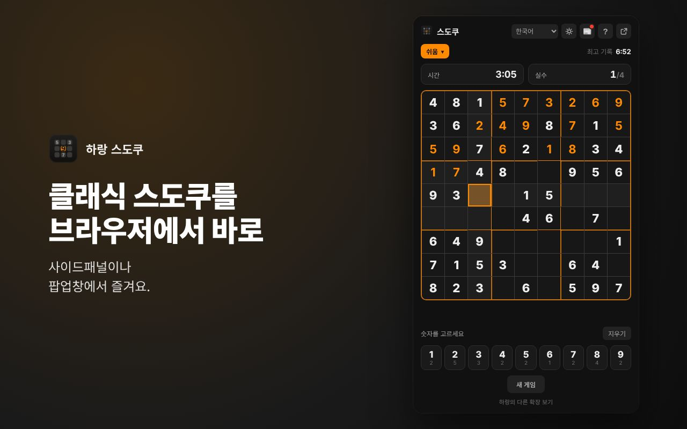
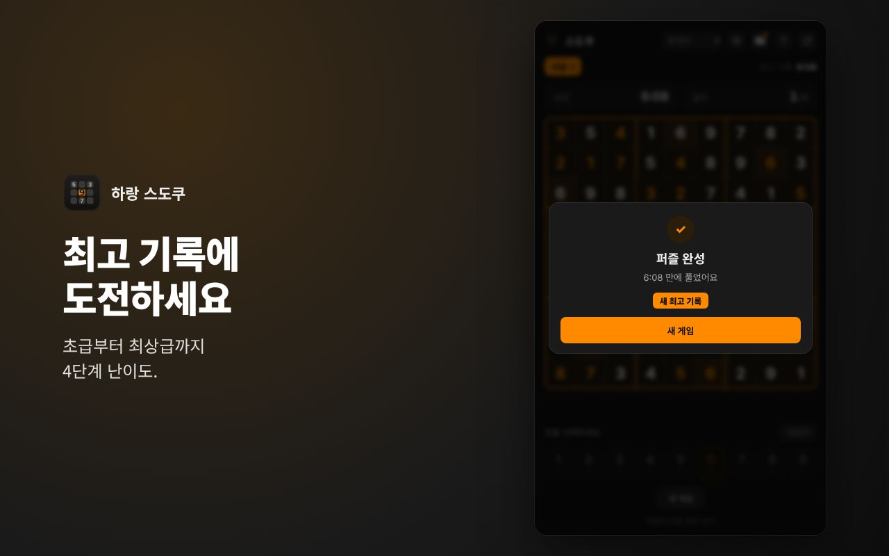

HARANG
HARANG

스도쿠 규칙
- 9×9 판의 모든 가로줄, 세로줄, 3×3 칸을 1부터 9까지의 숫자로 채워요.
- 같은 줄과 같은 3×3 칸에는 같은 숫자가 한 번만 들어갈 수 있어요.
- 틀린 숫자를 넣으면 실수로 기록돼요. 4번 틀리면 게임이 끝나요.
잘 푸는 요령
- 숫자가 많이 채워진 줄이나 칸부터 보면 빈칸에 들어갈 숫자가 금방 보여요.
- 숫자판의 작은 숫자는 그 숫자가 몇 개 남았는지 알려줘요. 거의 다 쓴 숫자부터 채우면 쉬워요.
- 한 칸에 들어갈 수 있는 숫자가 하나뿐인 곳을 찾는 게 기본이에요. 막히면 한 숫자를 정해서 9칸을 차례로 확인해 보세요.
하랑 스도쿠 특징
- 4단계 난이도: 초급, 쉬움, 어려움, 최상급
- 난이도별 최고 기록
- 끝내지 않은 퍼즐은 이어서
- 마우스와 키보드 모두 (숫자 입력, 방향키 이동)
- 어두운 테마 · 밝은 테마
- 사이드패널 또는 팝업창으로
- 9개 언어 지원
- 계정·광고·추적 없음, 완전 무료
자주 묻는 질문
무료인가요?
네, 모든 기능이 무료이고 광고도 없어요.
퍼즐이 매번 달라요?
네, 새 게임을 누를 때마다 고른 난이도로 새 퍼즐이 만들어져요.
개인정보를 수집하나요?
아니요. 설정과 기록은 내 컴퓨터에만 저장돼요.